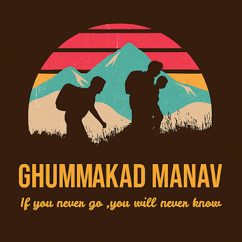
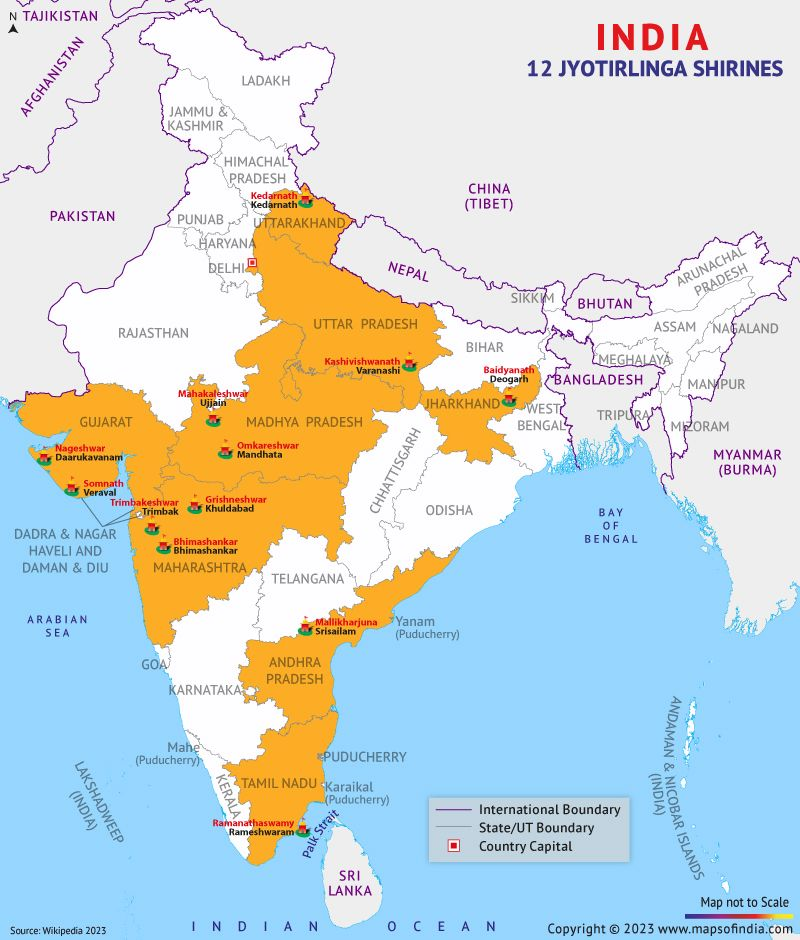

Route rhythm
Keep long highway days between 450 and 650 km, then slow down near temples, ghats, mountains, and coastal stretches.

Ghummakad ManavSolo travel vlog series
A road journey to all 12 Jyotirlinga shrines, captured through budget travel, real route notes, temple stops, and the quiet thrill of going solo.
The mission
This route is designed as a long-form India road trip starting from the NCR/Ghaziabad side, moving through the Himalayas, the Ganga belt, eastern India, south India, Maharashtra, Madhya Pradesh, and Gujarat.
Destination map
Use the map as the visual anchor, then follow the planned order below for a road-friendly solo loop.

On-road planning
Keep long highway days between 450 and 650 km, then slow down near temples, ghats, mountains, and coastal stretches.
Track fuel, tolls, parking, darshan booking, food, dormitories, hotels, bike service, and emergency cash separately.
Capture start-of-day plans, road conditions, stay reviews, temple approach, local food, and honest solo-travel lessons.
Keep rest days after mountain and night-drive stretches, share live location, and avoid pushing through fatigue.
Popular from YouTube
Popular channel videos fetched from the public YouTube channel data on 30 August 2026.
@GhummakadManav4546
About me
Thank you so much for your love and support. My name is Manish Chauhan. I am a travel vlogger, travel enthusiast, nature lover, and a crazy Leo. Enjoy virtual tours of this beautiful world through my lens with chill vibes.
The channel is about travelling to Apna Desh and Videsh through vlogs, solo trips, budget travel, hotel and dormitory tips, bike rentals, free-stay ideas, Ladakh dreams, and road stories that help other travellers plan with confidence.
"If you never go, you will never know."
Scan and connect
Scan the QR codes or use the direct links to support the 12 Jyotirlinga road-trip series.
Scan this QR code to follow reels, route updates, behind-the-scenes posts, and trip moments.
Open Instagram